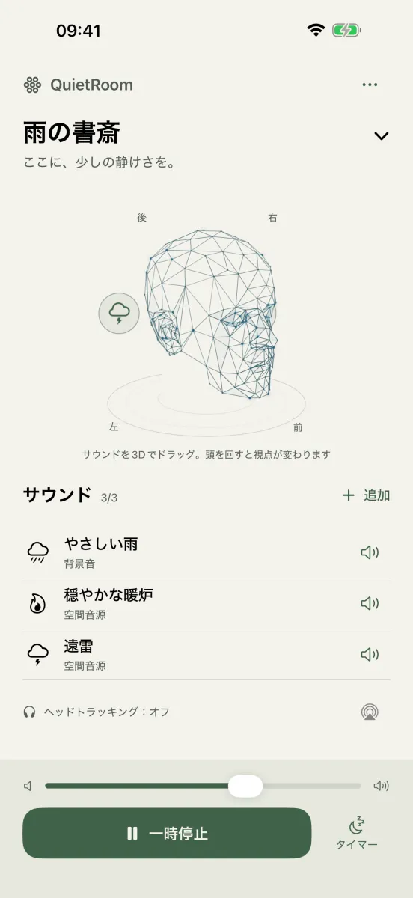
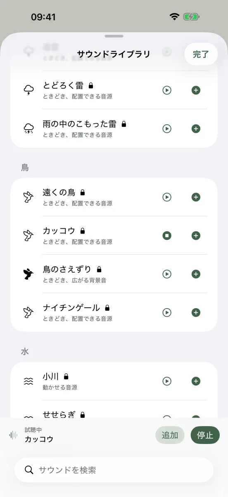
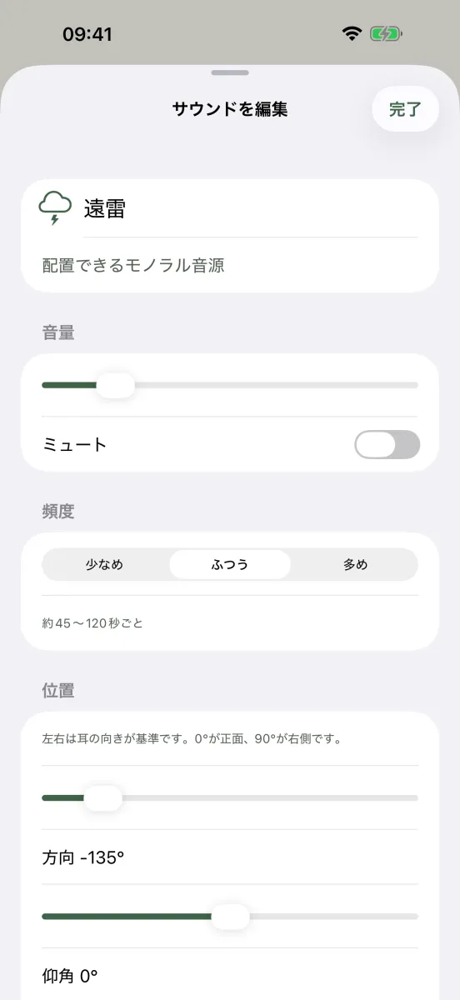
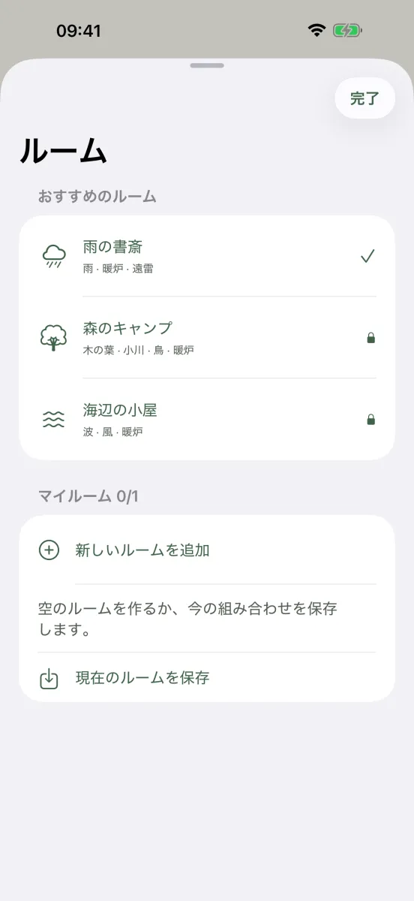

音が本当にそこにある
3Dのリスナーのまわりで、サウンドを左右、前後、上下へドラッグ。方向・仰角・距離を数値で正確に設定することもできます。広がる背景音は、いつもあなたのまわりにとどまります。
iPhone用 · iOS 18以降
QuietRoomは自然の音をあなたのまわりに置きます。左の窓には雨、前には小川、すぐ後ろには暖炉。ヘッドフォンをつけて聴きはじめ、心地よく感じるまでルームを整えてください。

3Dのリスナーのまわりで、サウンドを左右、前後、上下へドラッグ。方向・仰角・距離を数値で正確に設定することもできます。広がる背景音は、いつもあなたのまわりにとどまります。
雨、雷、鳥、小川、波、風、虫、足音、焚き火。録音が自然に移り変わるので、短いループのようには感じません。Proのサウンドも含め、追加する前に試聴できます。
雷、鳥のさえずり、しずく、足音は、ときおり聞こえてきます。それぞれ「少なめ」「ふつう」「多め」から選べます。足音は歩きつづけることもできます。
「雨の書斎」「森のキャンプ」「海辺の小屋」から始めても、空のルームから始めても。変更は自動で保存され、保存したルームはいつでも名前の変更、複製、置き換えができます。
対応ヘッドフォンなら、頭を回しても空間のサウンドはその場にとどまります。通常のヘッドフォンでも固定の空間サウンドで聴けます。
アカウントなし、広告なし、解析なし。サウンドは内蔵されているので、再生・編集・保存に通信は不要です。スリープタイマーはゆっくりフェードアウトします。



買い切り · サブスクリプションなし
価格はお住まいの地域のApp Storeに表示されます。